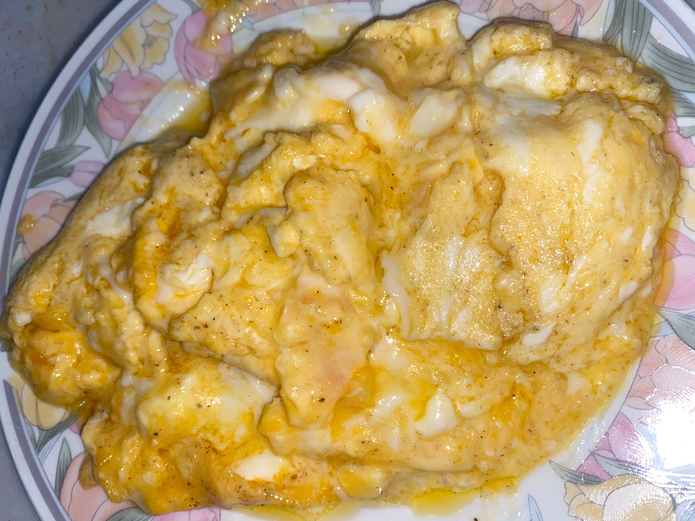
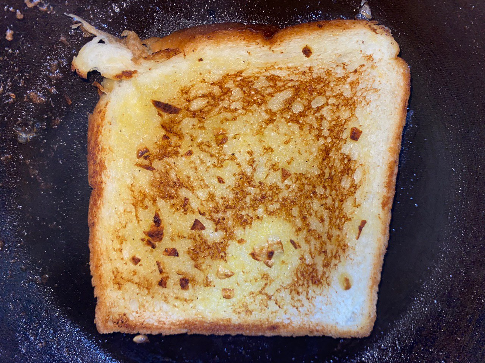
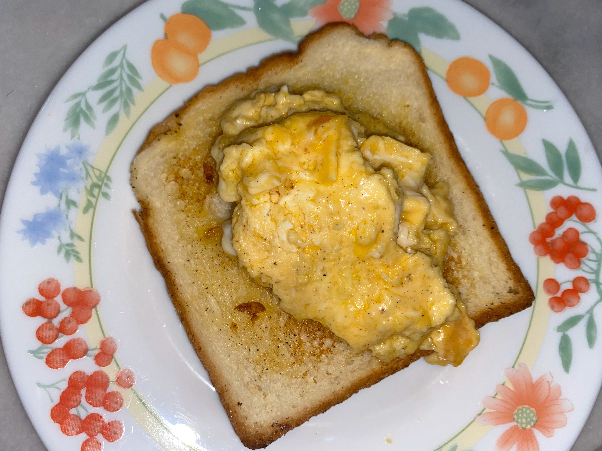

Hello everyone! We have entered Phase 1, which means that Singapore is beginning to open up. Woohoo! But most of our lives probably haven't changed much, sadly. We're effectively still in lockdown and stuck at home): To brighten things up, I'm sharing with you two lazy recipes/ meals/ snacks/whateveryouwanttocall them! They work really well on their own, but together, they form a simple, yet delicious meal.Let's get to it!
So, the first recipe I'd like to talk about is the cheesy scrambled eggs. You may be asking, "But can't everyone make scrambled eggs?". Well, this method uses a slightly different technique to cook these eggs. These eggs hit all the creamy, cheesy and buttery spots. Best of all? It takes no more than 5 minutes to make. Be wary though, these eggs contain a LOT of butter. But hey! You live to eat, not the other way round, right?
The other recipe I'd like to introduce is the homemade garlic toast. It probably won't look as pretty as those served in restaurants such as Jack's place, but it'll still taste really good. With the aromatic garlic and crunchy toast, this definitely satifies your need for a savoury and delicious snack..
Well, that's all the time I have for today. Have fun making them! By the way, I need to reemphasise. These two go really well together. Spread some of the eggs on the toast. Your life will be changed forever.
See ya!
~hoe